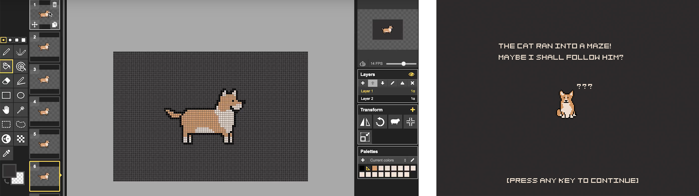
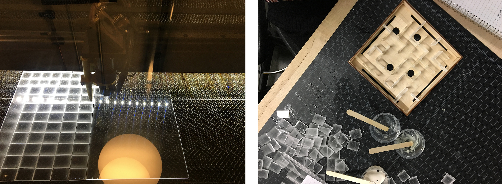
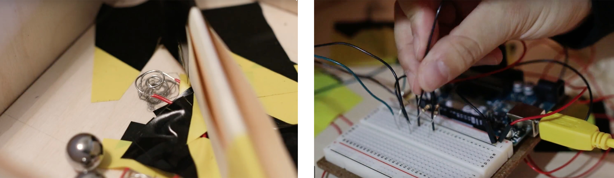

Animaze is a story-driven interactive game that bridges the physical space and the digital one. It is a portmanteau of "Animation" and "Maze". Our project combines these two concepts to bring the player an interactive, challenging, and entertaining experience that leads the player through a fun story. The game was displayed in class for young kids to play. We got lots of positive feedbacks from them.
The Team
Jiayu Luo
John Kim
Zhen Lou
My Role
Graphic design and animation for animation with Piskel
Video recording and editing
Assited in coding with Arduino and Processing
Assisted in making maze with Laser Cutter
Tools
Arduino
Piskel
Laser Cutter
Processing
The Making Process & Output
Designed cartoon characters and animation with Piskel. Used Processing to put all elements together to make the whole interactive animation.
Used laser cutter to create components of the maze and sticked them together.
Using Arduino to combine the maze and the animation. When metal balles fall into maze holes, they connect two wire to trigger a plot of the story in the animation.
How Do You Play?
Animaze is as simple as simply picking it up and playing! Do your best to get from the start to the finish! However, that is only the half of it. Watch the screen as an animated story plays along with you! The mean Cat has stolen Dog's favorite stuffed toy! Traverse through the maze and help Dog retrieve his toy. As you progress through the maze, so does the story. Just be careful, the mean Cat does not like to play nice. Can you help Dog retrieve his precious toy? He needs you!
What are kids saying about Animaze?
"I love mazes and now I love them even more!"
"It has a good appearance!"
"The characters are cute!"


© 2020 Jiayu Luo.